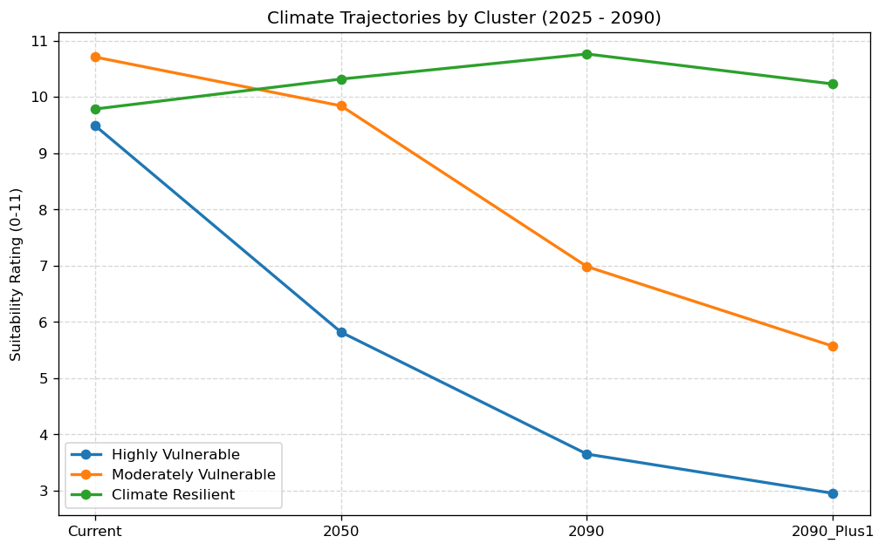

import pandas as pd
import numpy as np
from sklearn.preprocessing import StandardScaler
from sklearn.cluster import KMeans
from sklearn.impute import SimpleImputer
import json
import matplotlib.pyplot as plt
import seaborn as sns
# Reproducibility
RANDOM_STATE = 42
# Plot defaults (kept minimal)
plt.rcParams.update({'figure.dpi': 120})K-Means Cluster Analysis
Unsupervised clustering of taxa based on CAT climate rating trajectories.
Conventions - Paths are relative to the notebook location. - Unless stated otherwise, data are treated as read-only and the notebook writes outputs to ../data/.
1. Setup
2. Load data
csv_path = '../data/FullJoin3_with_climate_ratings-proofed.csv'
df = pd.read_csv(csv_path)3. Data preparation (year mapping)
# We explicitly map the CSV columns to the CORRECT years (2050/2090)
column_map = {
'climate_rating_current_sheet': 'Current',
'climate_rating_emissions_limited_2050': '2050', # WAS 2040
'climate_rating_business_as_usual_2090': '2090', # WAS 2080
'climate_rating_bau_plus_1degree_2090': '2090_Plus1' # WAS 2080
}
# Check if columns exist before renaming to avoid KeyErrors
# (This handles cases where the CSV might already have short names)
existing_cols = set(df.columns)
rename_dict = {k: v for k, v in column_map.items() if k in existing_cols}
df_analysis = df.rename(columns=rename_dict).copy()
# Select features for clustering
features = ['Current', '2050', '2090', '2090_Plus1']
X = df_analysis[features]
# Impute missing values (Mean strategy)
imputer = SimpleImputer(strategy='mean')
X_imputed = imputer.fit_transform(X)
# Scale the data (Crucial for K-Means to treat all years equally)
scaler = StandardScaler()
X_scaled = scaler.fit_transform(X_imputed)4. K-Means clustering
# n_clusters=4 aligns with your standard taxonomy
kmeans = KMeans(n_clusters=4, random_state=42, n_init=10)
clusters = kmeans.fit_predict(X_scaled)
df_analysis['Cluster_ID'] = clusters5. Intelligent Cluster Labeling
# We analyze the centroids to assign meaningful names dynamically
centroid_means = df_analysis.groupby('Cluster_ID')[features].mean()
# Define Logic based on the CORRECT 2050/2090 timeline:
# - Resilient: High rating in 2090 (> 7.5)
# - Highly Vulnerable: Low rating in 2090 (< 4.5)
# - Moderately Vulnerable: The middle ground
# - Climate Beneficiary: Rating improves from Current to 2090
cluster_labels = {}
for cluster_id, row in centroid_means.iterrows():
rating_2090 = row['2090']
decline = row['Current'] - row['2090']
if rating_2090 >= 8.0:
label = "Climate Resilient"
elif rating_2090 <= 4.0:
label = "Highly Vulnerable"
elif decline < -0.5:
label = "Climate Beneficiary"
else:
label = "Moderately Vulnerable"
cluster_labels[cluster_id] = label
# Apply the labels
df_analysis['Cluster_Label'] = df_analysis['Cluster_ID'].map(cluster_labels)6. Export results
# Save the clustered data
output_csv = '../data/UBCBG_Clustered_Analysis.csv'
df_analysis.to_csv(output_csv, index=False)
# Save the Analysis JSON
analysis_json = {
"cluster_definitions": cluster_labels,
"centroids": centroid_means.to_dict(orient='index')
}
with open('climate_cluster_analysis.json', 'w') as f:
# Custom encoder for numpy types
class NumpyEncoder(json.JSONEncoder):
def default(self, obj):
if isinstance(obj, (np.integer, np.floating)): return float(obj)
return super().default(obj)
json.dump(analysis_json, f, indent=2, cls=NumpyEncoder)7. Visualization (Sanity Check)
print("Cluster Analysis Complete (Years corrected to 2050/2090).")
print("\nIdentified Groups:")
print(df_analysis['Cluster_Label'].value_counts())
print("\nCentroid Profiles:")
print(centroid_means)
# Plot the Trajectories
plt.figure(figsize=(10, 6))
for label in df_analysis['Cluster_Label'].unique():
subset_id = df_analysis[df_analysis['Cluster_Label']==label]['Cluster_ID'].iloc[0]
subset_data = centroid_means.loc[subset_id]
plt.plot(features, subset_data, marker='o', linewidth=2, label=label)
plt.title("Climate Trajectories by Cluster (2025 - 2090)")
plt.ylabel("Suitability Rating (0-11)")
plt.grid(True, linestyle='--', alpha=0.5)
plt.legend()
plt.show()Cluster Analysis Complete (Years corrected to 2050/2090).
Identified Groups:
Cluster_Label
Moderately Vulnerable 8056
Climate Resilient 5818
Highly Vulnerable 2288
Name: count, dtype: int64
Centroid Profiles:
Current 2050 2090 2090_Plus1
Cluster_ID
0 9.785056 10.317523 10.763599 10.230190
1 10.709202 9.842312 6.983287 5.567637
2 9.490822 5.817745 3.649476 2.952360
3 4.681188 7.304950 8.855446 9.055446